Apache NetBeans
Apache NetBeansLatest release
NetBeans Platform Gesture Collection Infrastructure Tutorial
| This tutorial needs a review. You can edit it in GitHub following these contribution guidelines. |
Do you know what your users are doing with your NetBeans Platform application? Which windows are they opening? Which actions are they commonly invoking? When are they clicking the "Help" button on a dialog? Knowing the answers to these questions is crucial in determining where you should be assigning development resources. Knowing that the "Help" button is being pressed a lot for a particular feature might indicate that there is a problem with the UI that you could consider modifying in some way.
Also, the priority of bugs can be determined, at least partially, by how frequently something is actually being used. When someone files a P1 bug and writes e-mails demanding you fix something, wouldn’t it be helpful to find out that the buggy feature in question is only being used by 2% of your user base?
The usefulness of knowing what users are doing with your application is limitless. Time to add a user interface gesture collector to your application. NetBeans IDE has such a collector and, since your application is built on the same infrastructure (i.e., the NetBeans Platform), you can make use of that same gesture collecting infrastructure.
In this tutorial, you are introduced to setting up the NetBeans Platform gesture collection infrastructure and to using it in a NetBeans Platform application. You will analyze how heavily the "brush size change" feature in the NetBeans Paint Application is used:
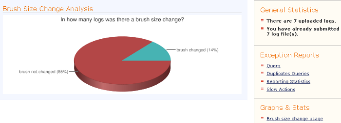
By the end of this tutorial, you should have a general understanding of how the gesture collection infrastructure fits together and have a basic idea of how to create your own statistics and where to go for further information.
Setting Up the Gesture Collecting Infrastructure
When setting up the gesture collecting infrastructure, you need to enable certain modules that are disabled by default in your NetBeans Platform application.
If you want to try out these instructions on an actual application prior to trying them out on your own sources, you can use the NetBeans Platform Paint Application, which you can get from the Samples category in the New Project wizard (Ctrl-Shift-N). That is the example application that will be referred to throughout this tutorial.
-
In the Projects window, right-click your application and choose Properties. In the Project Properties dialog, click "Libraries".
1. Check the "nb" checkbox, then check the following three checkboxes to add the related modules to the application:
-
UI Gestures Collector Infrastructure
-
UI Handler Library
You should now see the following:
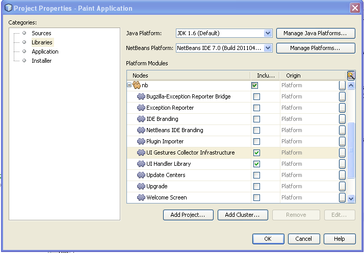
Logging UI Gestures
A UI collecting gesture, that is, an event that will be identified as a UI gesture, is considered to be everything that is logged into the "org.netbeans.ui" logger. In this section you are shown how to use this logger.
-
In the
PaintTopComponent, change thestateChangedmethod so that a new gesture log is created whenever the brush size changes:
@Override
public void stateChanged(ChangeEvent e) {
int brushSize = brushSizeSlider.getValue();
canvas.setBrushDiameter(brushSize);
String UI_LOGGER_NAME = "org.netbeans.ui.brushsize";
LogRecord record = new LogRecord(Level.INFO, "BRUSH_SIZE_CHANGED");
record.setParameters(new Object[]{brushSize});
record.setLoggerName(UI_LOGGER_NAME);
Logger.getLogger(UI_LOGGER_NAME).log(record);
}Read more about java.util.logging.LogRecord .
-
Run the application. Make the gesture a few times, that is, change the brush size a few times, using the "Brush Size" slider, shown below:
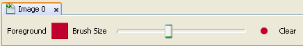
-
Close the application and notice that the following file exists in the "build/testuserdir/var/log" folder, which is visible if the Files window (Ctrl-2) is open in the IDE:
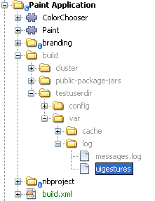
Whenever the brush size changes, a new entry such as the following is added to the "uigestures" file:
<record>
<date>2011-05-12T16:42:30</date>
<millis>1305211350828</millis>
<sequence>102</sequence>
<level>INFO</level>
<thread>12</thread>
<message>BRUSH_SIZE_CHANGED</message>
<param>24</param>
</record>You have now learned how to collect UI gestures. Let’s now learn how to submit them to the server.
Submitting UI Gestures
In this section, you learn how to submit gestures to the server. By default, gestures are automatically submitted once there are 1000 gestures in the "uigestures" folder. In addition to that, in this example we are going to let the user specify when the gestures are to be sent, interactively, via a button in the toolbar.
-
Follow these instructions to incorporate this plugin into your application: org-netbeans-modules-uihandler-interactive.nbm
Add this target to your application’s "build.xml" file and then the NBM you have downloaded above will always be copied into the right folder whenever you build the application, assuming the NBM file is in the same folder as the "build.xml" file:
<target name="build" depends="suite.build">
<copy todir="build/cluster/update/download" >
<fileset file="org-netbeans-modules-uihandler-interactive.nbm"/>
</copy>
<echo message="copied the interactive ui handler into cluster/update/download" />
</target>-
Run the application and notice that you now have a new button in the toolbar, which can be used for submitting gestures to the server:
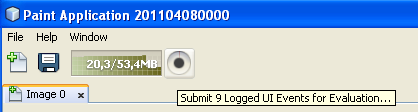
-
Click the button and you see this dialog:
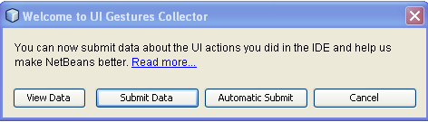
-
Click "View Data" and you see this dialog, showing the data that is ready to be submitted:
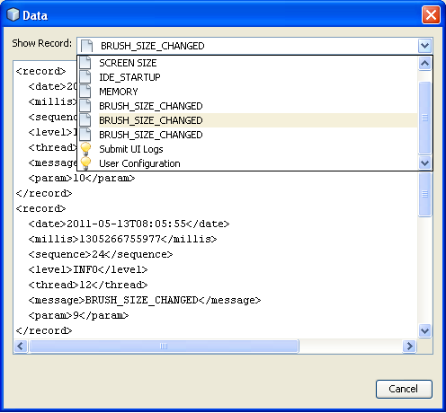
-
Now we will change the location for submitting the gestures. By default, gestures are submitted here:
Look in the source of that location and you will see this:
<!DOCTYPE html
PUBLIC "-//W3C//DTD XHTML 1.0 Transitional//EN"
"http://www.w3.org/TR/xhtml1/DTD/xhtml1-transitional.dtd">
<html xmlns="http://www.w3.org/1999/xhtml">
<head>
<meta http-equiv="Content-Type" content="text/html; charset=UTF-8"></meta>
<title>Welcome to UI Gestures Collector</title>
<link rel="stylesheet" type="text/css" href="https://netbeans.org/nonav/uigestures/index.css"></link>
</head>
<body>
<p>
You can now submit data about the UI actions you did in the IDE and
help us make NetBeans better. <a href="https://netbeans.org/nonav/uigestures/info2.html">
Read more...</a>
</p>
<!--
<form action="https://netbeans.org/uigestures/post2.html" method="post">
-->
*<form action="http://statistics.netbeans.org/analytics/upload.jsp" method="post">*
<input type="hidden" name="submit" value="&Submit Data"></input>
<input type="hidden" name="auto-submit" value="&Automatic Submit"></input>
<input type="hidden" name="view-data" value="&View Data" align="left" alt="&Hide Data"></input>
<input type="hidden" name="exit" value="&Cancel"></input>
</form>
</body>
</html>Gestures for NetBeans IDE are visualized at http://statistics.netbeans.org/analytics/.
-
You need to create an XHTML page similar to the above, but pointing to your own location for receiving gestures. For example:
<h2>UI Gestures Collector</h2>
<p>Welcome to UI Gestures Collector</p>
<p>You can now submit data about the UI actions you performed.</p>
<form action="http://localhost:8888/analytics/upload.jsp" method="post">
<input name="submit" value="&Submit Data" type="hidden">
<input name="exit" value="&Cancel" type="hidden">
</form>Later in this tutorial you will learn how to use the "upload.jsp" referred to above.
-
Now that we have a site that will handle our gestures, we need to customize the gesture collecting infrastructure to use that site rather than the default. The site used for this purpose is specified by the WELCOME_URL key in a bundle in the "uihandler" module. You now need to brand the value of the WELCOME_URL key to point to where your site for handling gestures is found. Right-click on the Paint Application and choose "Branding". In the Branding editor, use the Resource Bundles tab to look for "uigestures". You will find several values returned, as shown below, including "WELCOME_URL":
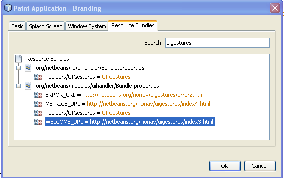
Right-click on the WELCOME_URL item above and choose "Add To Branding". Then replace the above with the location of your own UI gesture handling location.
By means of the indirection provided by the gesture collection XHTML page shown above, you can easily switch to different servers or change the buttons shown in the page or even shutdown the service completely, simply by editing the XHTML page.
Accepting UI Gestures
In this section, you learn how to accept gestures.
-
Install Mercurial and run this command:
hg clone http://hg.netbeans.org/main/miscYou should see something like the following:
C:\Documents and Settings\gwielenga\uigesture>hg clone http://hg.netbeans.org/main/misc
destination directory: misc
requesting all changes
adding changesets
adding manifests
adding file changes
added 5854 changesets with 22833 changes to 7178 files
updating to branch default
4995 files updated, 0 files merged, 0 files removed, 0 files unresolved-
In the Files window, browse to the location where you did your clone and you should be able to open "misc/logger/uihandlerserver" as a NetBeans project, as shown below:
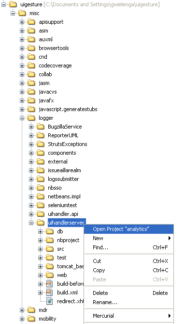
-
On the command line, go to the location above, that is, go to "misc/logger/uihandlerserver" and then run:
antThe above command will download many required JARs and compile the application. The application should now look as follows in the IDE:
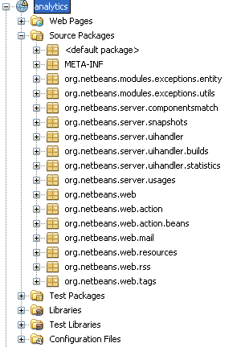
-
Run the application and go to this site:
The analytics application should start and you should see a default analytics page in your browser.
-
Now we’re going to set up our NetBeans Platform application to use the redirect page that is in the deployed application, at "misc/logger/uihandlerserver/redirect.xhtml". Do this by opening the application’s
project.propertiesfile and then adding this line, changing it where necessary to match your own file location:
run.args.extra=-J-Dorg.netbeans.modules.uihandler.LoadURI=file:///"C:/Documents and Settings/gwielenga/uigesture/misc/logger/uihandlerserver/redirect.xhtml"-
When the application starts up, click the UI Gesture button, then click "Submit Data" a few times, refresh the page in the browser, and you should see something like this, taking note of the top right corner, where the data is incremented:
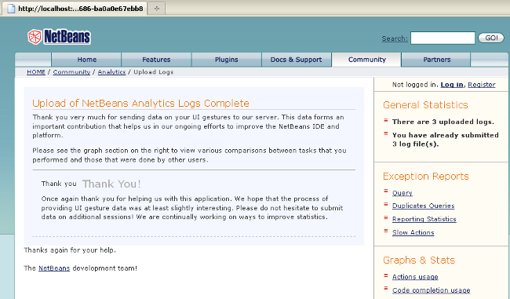
-
Look in the "uihandlerserver/build/logs" folder and you’ll see a new file added each time data is submitted to the server:
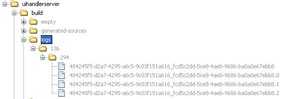
You have now learned about the Analytics application and how to use it to accept gestures from the user.
Visualizing UI Gestures
In this section, you learn how to visualize gestures. You will do so by working with three files in the Analytics application. You will create a Statistic class:
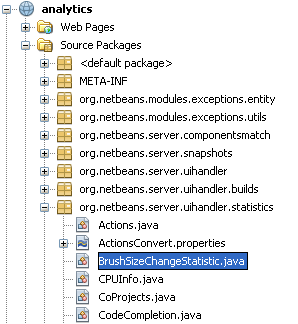
You will also create a JSP file:
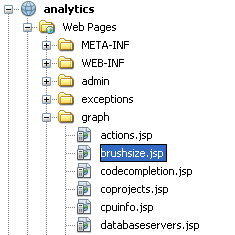
Finally, you will tweak an existing file, which defines the sidebar of the application:
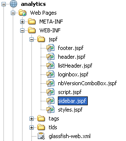
To learn about the different ways of visualizing gestures, you are advised to examine the existing statistic classes and JSP files in the application. These are used by the NetBeans statistics community and can serve as examples for your own statistics.
-
Let’s first create a statistic:
package org.netbeans.server.uihandler.statistics;
import java.util.HashMap;
import java.util.Map;
import java.util.logging.LogRecord;
import java.util.prefs.BackingStoreException;
import java.util.prefs.Preferences;
import javax.servlet.jsp.PageContext;
import org.netbeans.server.uihandler.Statistics;
import org.netbeans.server.uihandler.statistics.BrushSizeChangeStatistic.DataBean;
import org.openide.util.lookup.ServiceProvider;
@ServiceProvider(service = Statistics.class)
public class BrushSizeChangeStatistic extends Statistics {
private static final DataBean EMPTY = new DataBean(0, 0, 0);
public static final String STATISTIC_NAME = "BrushSizeChangeStatistic";
public BrushSizeChangeStatistic() {
super(STATISTIC_NAME);
}
@Override
protected DataBean newData() {
return EMPTY;
}
@Override
protected DataBean process(LogRecord rec) {
if ("BRUSH_SIZE_CHANGED".equals(rec.getMessage())) {
return new DataBean(1, 0, 0);
} else {
return EMPTY;
}
}
@Override
protected DataBean finishSessionUpload(String userId, int sessionNumber, boolean initialParse, DataBean d) {
int nonNullSessions = 0;
if (d.getActionsCount() > 0) {
nonNullSessions = 1;
}
return new DataBean(d.getActionsCount(), 1, nonNullSessions);
}
@Override
protected DataBean join(DataBean one, DataBean two) {
return new DataBean(one.getActionsCount() + two.getActionsCount(),
one.getNumberOfSessions() + two.getNumberOfSessions(),
one.getNumberOfNonNullSessions() + two.getNumberOfNonNullSessions());
}
@Override
protected void write(Preferences pref, DataBean d) throws BackingStoreException {
pref.putInt("all", d.getActionsCount());
pref.putInt("sessions", d.getNumberOfSessions());
pref.putInt("non_null_sessions", d.getNumberOfNonNullSessions());
}
@Override
protected DataBean read(Preferences pref) throws BackingStoreException {
return new DataBean(pref.getInt("all", 0), pref.getInt("sessions", 0), pref.getInt("non_null_sessions", 0));
}
@Override
protected void registerPageContext(PageContext page, String name, DataBean data) {
page.setAttribute(name + "Usages", data.getUsages());
}
public static final class DataBean {
private final int actionsCount;
private final int numberOfSessions;
private final int numberOfNonNullSessions;
public DataBean(int actionsCount, int numberOfSessions, int numberOfNonNullSessions) {
this.actionsCount = actionsCount;
this.numberOfSessions = numberOfSessions;
this.numberOfNonNullSessions = numberOfNonNullSessions;
}
public int getActionsCount() {
return actionsCount;
}
public int getNumberOfSessions() {
return numberOfSessions;
}
public int getNumberOfNonNullSessions() {
return numberOfNonNullSessions;
}
public Map getUsages() {
Map usages = new HashMap();
usages.put("brush changed", numberOfNonNullSessions);
usages.put("brush not changed", numberOfSessions - numberOfNonNullSessions);
return usages;
}
}
}-
Next, we need to display our statistic in some way:
<%@page contentType="text/html"%>
<%@page pageEncoding="UTF-8"%>
<%@ taglib uri="/WEB-INF/statistics.tld" prefix="ui" %>
<c:set var="path" value='/ <a href="../index.jsp">Analytics</a> / Graph / Brush Size'/>
<%@include file="/WEB-INF/jspf/header.jspf" %>
<ui:useStatistic name="BrushSizeChangeStatistic"/>
<h2>Brush Size Change Analysis</h2>
<ui:pie
collection="globalBrushSizeChangeStatisticUsages"
category="key"
value="value"
title="In how many logs was there a brush size change?"
resolution="600x200"
/>
<%@include file="/WEB-INF/jspf/footer.jspf" %>It is important to understand how the JSP page above is linked to the statistic class that we created earlier:
-
Tag Library. We use a tag library that provides the "useStatistic" tag, in line 6 above. The "useStatistic" tag injects the statistics data into the JSP page. To create characters we use the statistic tag library, together with, in this case, its pie tag. The "useStatistic" tag injects the data that your statistic has created into the JSP page. In our case we don’t need to preprocess the data first because the pie chart tag accepts a collection and it doesn’t need to know nothing about our
DataBean. -
Collection Name. The name of the collection specified above, in line 11, is "globalBrushSizeChangeStatisticUsages". The prefix, "global", specifies that we want to see the overall statistics, rather than "user" and "last". The "last" prefix contains only data counted for the last submitted log, while the "user" prefix contains all the data from the submitter. The middle part of the name is "BrushSizeChangeStatistic", which is the name of the statistic that has calculated the data, while the suffix "Usages" was added in the statistic’s "registerPageContext" method so that different charts can be distinguished.
1. Run the Analytics application and also run the Paint application. Submit a few logs and then go to this location:
Below, you can see that 7 logs have been submitted and that the majority of them indicate that the brush size change feature is not used a lot:
-
Now, let’s add a bar chart, together with the pie chart used above:
<%@page contentType="text/html"%>
<%@page pageEncoding="UTF-8"%>
<%@ taglib uri="/WEB-INF/statistics.tld" prefix="ui" %>
<c:set var="path" value='/ <a href="../index.jsp">Analytics</a> / Graph / Brush Size'/>
<%@include file="/WEB-INF/jspf/header.jspf" %>
<ui:useStatistic name="BrushSizeChangeStatistic"/>
<h2>Brush Size Change Analysis</h2>
<ui:pie
collection="globalBrushSizeChangeStatisticUsages"
category="key"
value="value"
title="Number of logs with a brush size change"
resolution="600x200"
/>
<ui:bar
collection="globalBrushSizeChangeStatisticAvg"
category="name"
value="value"
serie="name"
stacked="true"
title="Average count of brush size changes"
resolution="300x400"
/>
<%@include file="/WEB-INF/jspf/footer.jspf" %>This is what we’d like to see, that is, a bar chart showing averages, together with our pie chart:
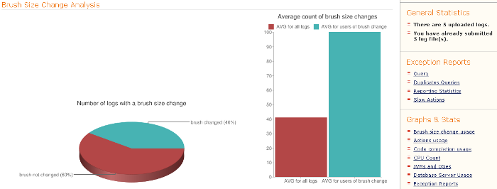
Therefore, we need to add a new calculation to our BrushSizeChangeStatistic.
-
In the
BrushSizeChangeStatisticclass, add the following to theDataBean:
private Collection<ViewBean> getAvgData() {
List<ViewBean> vb = new ArrayList<ViewBean>();
vb.add(new ViewBean("AVG for all logs", actionsCount / numberOfSessions));
vb.add(new ViewBean("AVG for users of brush change", actionsCount / numberOfNonNullSessions));
return vb;
}
public static final class ViewBean {
private final String name;
private final Integer value;
public ViewBean(String name, Integer value) {
this.name = name;
this.value = value;
}
public String getName() {
return name;
}
public Integer getValue() {
return value;
}
}Then expose the above via the line in bold below in the registerPageContext :
@Override
protected void registerPageContext(PageContext page, String name, DataBean data) {
page.setAttribute(name + "Usages", data.getUsages());
*page.setAttribute(name + "Avg", data.getAvgData());*
}Now you know how to visualize gestures received from the user. Refer to the files shown earlier and treat them as examples for your own statistics. In the "statistics" package, explore the available statistics:
Then learn how to render them, by looking at the JSPs in the "graph" folder:
Further Reading
This concludes the NetBeans Platform Gesture Collector Tutorial. This document has described how to collect user interface gestures from the users of a NetBeans Platform application. For more information about gesture collecting on the NetBeans Platform, see the following resources: